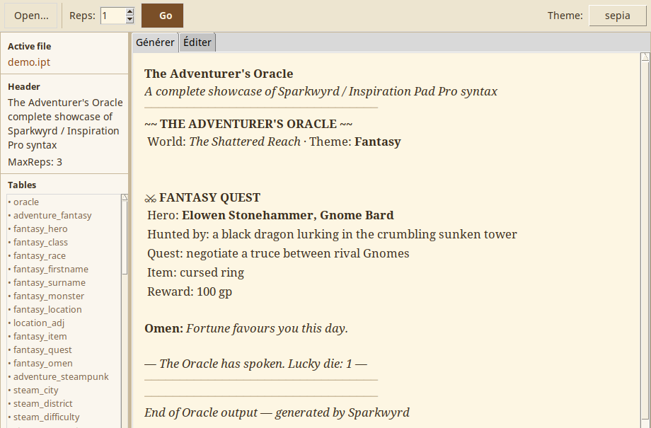

Sparkwyrd
A Tcl/Tk reimplementation of the Inspiration Pad Pro random text generator,
compatible with .ipt files (weighted tables, dice expressions,
variables, filters). Useful for encounter generators, NPC creators,
treasure tables, or story seeds for tabletop RPGs.

https://github.com/luginf/Sparkwyrd
Yi Jing
A small Tcl/Tk desktop app to identify an I Ching hexagram by toggling its six yin/yang lines with a click.